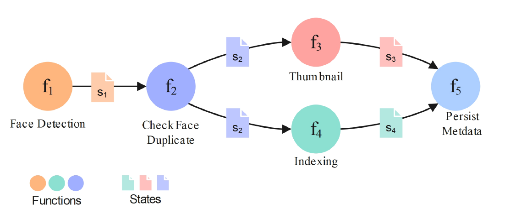
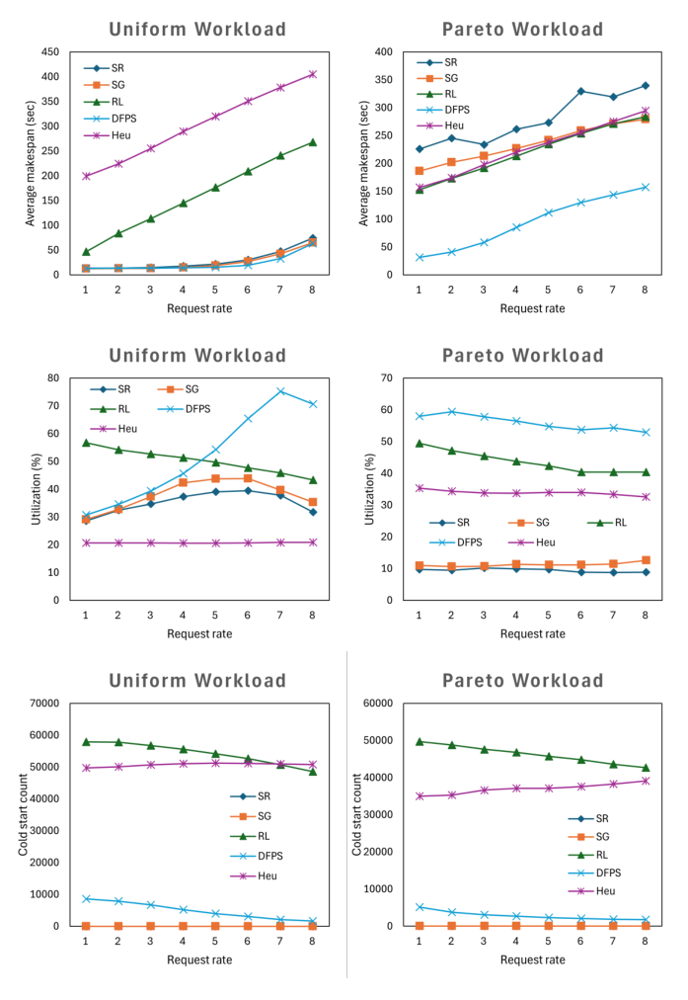
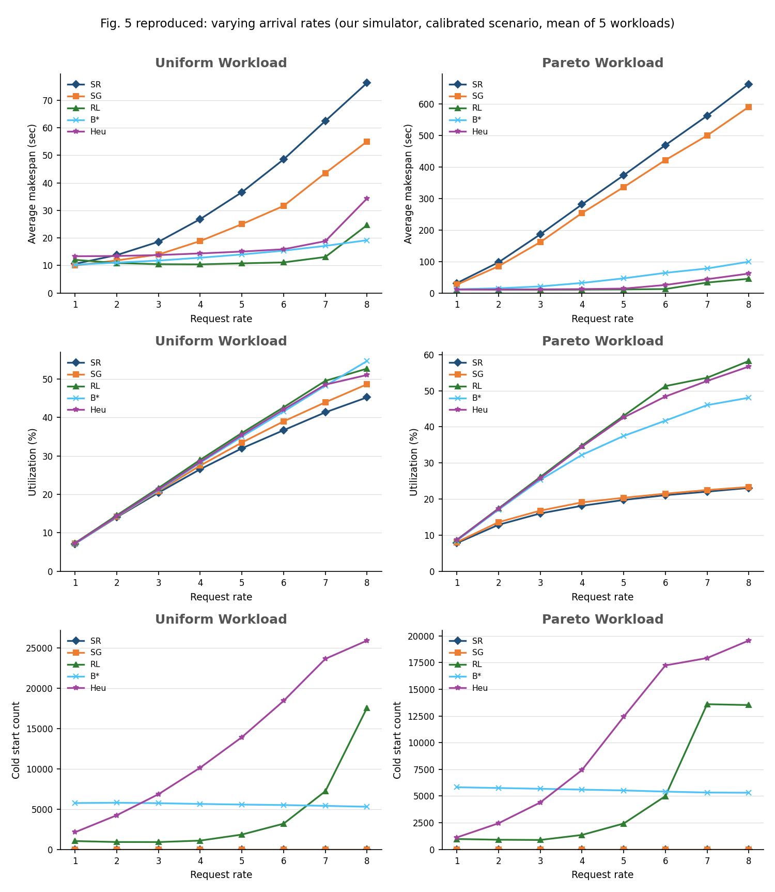

DFPS research meetingsimulation study
Moving capacity, then moving the queue: a simpler controller for serverless workflows on edge servers
We start from DFPS (Zolfaghari et al., IEEE Transactions on Services Computing, 2025), look at where it falls short, rebuild it, and test what actually makes it work.
24 Oct 2026Simulator study · Azure 2019 and Huawei 2023 traffic
Open with the one-sentence story: DFPS places and schedules serverless workflows on edge servers. We rebuilt it, measured where it has room to improve, and found a simpler controller that exploits that room. Everything is in simulation.
Abstractsummary
Our controller: lower latency than B* and RL, with far fewer cold starts
ProblemEdge workflowsFixed container slots. Tail latency depends on placement, request moves and dispatch order.
Our controllerThree mechanisms1 · Placement with few changes. 2 · Request moves every 4 s, best gain first. 3 · Dispatch order: most at risk first; requests routed by data transfer.
Compared withB*, RLB* is our reimplementation of DFPS. RL is the Yang et al. (2025) dispatcher. Heu (Xu et al., 2023) is cited, not run.
Average makespan (s)50% loadOursOurs on-demandB*RL
70% loadOursOurs on-demandB*RL
85% loadOursOurs on-demandB*RL
P99 makespan (s)50% loadOursOurs on-demandB*RL
70% loadOursOurs on-demandB*RL
85% loadOursOurs on-demandB*RL
Per-case P99 makespan (s, log scale): ● Ours ● B*50% load
70% load
85% load
Cold starts per run50% loadOursOurs on-demandB*RL
70% loadOursOurs on-demandB*RL
85% loadOursOurs on-demandB*RL
RL starts with no initial placement (every slot empty); in an earlier 18-case test (CAP-U) giving RL and Heu the same NSGA-II start as ours/B*, cold starts changed by −1.6% on average (range −11% to +13%) and P99 by −1.3% — the empty start is not the explanation for RL's high count.
Request moves per 100 requests50% loadOursOurs on-demandB*RL
70% loadOursOurs on-demandB*RL
85% loadOursOurs on-demandB*RL
Metric: CAP-W1 (containers differ in size), development seeds 1–3, 6 cases per load (Azure and Huawei traces); average makespan = mean time from a request's arrival to its last task finishing; P99 makespan = the 99th percentile of the same time; cold starts counted after warm-up; request moves = relocations of a request to another node, per 100 arrivals (RL never moves a request, so its bars are zero); per-case dots = P99 of ours and B* in each of the 6 cases per load, on a log scale; ours is FROZEN-4 (gain-ordered request moves, transfer-only routing, shortfall-first re-layout), which fills all leftover memory with spare containers; ours on-demand (hatched) is the same controller with only the containers the sizing rule asks for, using 64, 87 and 96% of the memory at 50, 70 and 85% load; simulation only.
Lead with the five rows of charts: average latency, then P99 latency, which is the tail the controller is built for, then the same P99 case by case: every dot pair shows ours below B*. Then cold starts and request moves. Each chart is one load and compares ours, ours on-demand (hatched), B* and RL. Be straight about on-demand: it uses less memory and has higher latency than the filled version, but it is still well ahead of B* and RL. Everything here is CAP-W1 development seeds; the next slide still shows the earlier cost check and held-out result.
Abstractcost check and held-out evidence
Cost check: far fewer cold starts and fewer request moves than B*. The held-out check under CAP-W1 is still to run
Cost check, same 18 cases (CAP-W1)
- Cold starts per run: about 5× fewer than B* (range 3–10×) and about 22× fewer than RL (range 11–36×). Same as the textbook stack.
- Request moves: about 19% fewer than B* (range 50% fewer to 13% more). The textbook stack moves about 15% fewer than ours, which is not a gain for it: it is 17% slower at P99.
- Warm idle container time: about 30% less than B* and about 33% less than RL. Within 2% of the textbook stack.
Held-out check
- Not yet run under CAP-W1. Planned: seeds 7–10, the baselines tuned with the same budget as ours on seeds 1–3, written down before the run.
- Earlier result, CAP-U and an earlier configuration (before dispatch order): seeds 4–10, 65% lower P99 than the best existing method at 70–85% load (28 of 28 cases). Not comparable with the CAP-W1 numbers.
Metric: CAP-W1 (containers differ in size), development seeds 1–3, 18 cases (Azure and Huawei traces at 50, 70 and 85% load); ratios are per case, then averaged as a geometric mean; ours is FROZEN-3; cold starts counted after warm-up; warm idle time = container-seconds a warm container sat unused. The earlier held-out line is CAP-U, seeds 4–10, 42 cases, frozen 23 Oct. Simulation only.
The cost check asks whether the latency gain is paid for with more churn. Under CAP-W1 it is not: cold starts are about 5 times lower than B*, moves are lower, idle time is lower. Say plainly that the textbook stack matches us on cold starts and idle time and moves a little less; what separates us from it is P99. The held-out test has not been run under CAP-W1; the CAP-U line is an earlier result and should not be read as covering this controller.
Overviewthe talk in five steps
We go from the paper to a new controller in five steps
The DFPS paperWhat it solves, how it works, where it may be weak
Our re-implementationFour errors fixed; the corrected version is called B*
HeadroomHow much better could it get, and what in B* matters?
Our controllerThree mechanisms, each answering one problem
Results and limitsHeld-out tests, robustness, where it does not win
Main message. The improvement does not come from clever container swaps. It comes from adapting capacity to load every minute and then moving the requests that are already waiting to where the capacity is.
Give the whole answer up front so the audience can follow the evidence. Sections 1 and 2 are background, section 3 motivates the new design, section 4 is the contribution, section 5 is the evidence.
1 · The DFPS paperthe problem
DFPS decides where the steps of serverless workflows run on a network of edge servers
- Each edge server holds a fixed number of function containers (5–25 slots). 80 servers, linked by a network.
- A request is a workflow: a small graph of functions. Each step hands 10–50 MB of state to the next.
- The goal is a short makespan: time from the request's arrival to the end of its last step.
- Starting a container (a cold start) takes 2–10 s, so running containers must be reused and placed well.

A workflow: five functions, arrows carry intermediate states s1–s4. Fig. 1 of the paper.
A workflow is a DAG of functions. Two things make the problem hard: data has to move between steps, and a function only runs where a container for it exists. Cold starts are expensive, so the layout of containers across servers matters a lot.
1 · The DFPS paperthree parts, three time scales
DFPS has three parts that work at different time scales
Once, before any request1 · Initial placementDecides how many containers of each function go on each server. A genetic algorithm (NSGA-II) balances closeness against each function's fair share.
For every arriving request2 · Request schedulingMatches the request's whole workflow onto running containers (graph pattern matching), weighing queueing against data transfer.
Every 4 seconds3 · Dynamic replacementSwaps a few containers between functions and moves waiting requests (simulated annealing). This is DFPS's auto-scaling, and the part this talk is about.
Our final controller replaces part 2 by a simpler router (each task goes to the node with the least input-transfer time). Part 1 only provides the starting layout.
Source: DFPS paper §4.1–4.3 (NSGA-II, Eq. 3–4; graph matching, Eq. 5–6; annealing, Alg. 1–2, Eq. 7–8).
Explain each in one sentence. Part 1 is offline and fixed. Part 2 is a per-request dispatcher, which our final controller replaces by a simpler router. Part 3 is the only thing that reacts to changing traffic, so everything we study is about how well it adapts.
1 · The DFPS paperpart 3 in detail
Part 3 adapts capacity by changing one container per trial
Every 4 s DFPS tries about 100 small changes (simulated annealing) and keeps those that save time. One trial:
Pick a containerA random server, and on it the function with the fewest recent requests.
Turn it into another functionThe new function is chosen at random. It needs a cold start. The total number of containers never changes.
Pull waiting requestsRequests of the new function that wait at nearby servers move here if they would finish sooner.
Why it helps: under uneven traffic it keeps shifting slots from idle functions to busy ones, which is why DFPS beats static layouts.
Source: DFPS paper §4.3 and Alg. 1: one random replacement per trial; a request is relocated when its gain is positive (Eq. 8).
This is the mechanism to remember. One trial changes one container, and the target function is picked at random. Keep this in mind: the next slide points out what that implies when traffic shifts quickly.
1 · The DFPS papersimulated annealing, step by step
Simulated annealing: about 100 trials every 4 s, each swapping one container; a worse trial is sometimes kept
One trial
1 · PickRandom server; fr = its function with fewest recent requests; fn = random.
↓
2 · SwapRemove an fr container; add a cold fn container there.
↓
fr has no container left?
yes →
Forced movesIts queued requests go to their best other host.
3 · Pull (every trial)Waiting fn requests within 2 hops move here if faster.
↓
4 · ScoreEF = total time saved by the moves; accept or revert.
Accept or revert
If EF ≥ 0, keep the trial.
If EF < 0, keep it with probability exp(EF ÷ T), otherwise revert.
Temperature T starts at 10 s and is multiplied by 0.95 after each trial. After 100 trials it is about 0.06 s.
Why accept some worse trials: while T is high, a worse trial is often kept, so the search can leave a poor layout. As T falls, only improvements survive.
What B* changes: it returns the best trial seen, not the last one. Its time savings use the paper's actual execution time AET (input and output state transfer plus the service time at the node, equal weights, λ = 1); our request-move rule uses the same quantity, with the output term weighted λ = 0.5 and a service time computed from mean run times.
Metric: parameters from the assumptions file: Tmax 10 s, α 0.95, 100 trials, neighbours within 2 hops. Trials are scored with AET values computed from mean run times, not by running the simulator. Source: DFPS paper, Alg. 2, Eq. 7–8. Acceptance: standard rule (Kirkpatrick et al., 1983); fix E3: ours.
Action: a trial that saves time is kept; a trial that loses time is kept with probability exp(EF ÷ T), otherwise reverted. Take away one idea. B* is a local search over single container swaps that run every 4 s, and each swap is judged by the same AET (actual execution time) that our request-move rule reuses. Our controller removes the annealing.
1 · The DFPS paperhints of weakness
Four places where DFPS can fall behind when traffic shifts
SpeedSlow to adaptOne container per trial, and the new function is random: with 30 functions, only about 1 trial in 30 hits the overloaded one. Six missing containers can take about 24 s.Containers added, one per 4 s round. Solid = added, dashed = still missing.
Starting pointThe first layout is planned offlineIts "fair share" uses run time only and ignores how often a function is called, so a frequently called short function gets few containers.
TimingA request's plan is fixed on arrivalAll steps are assigned to servers at arrival. Queues that grow later are not seen by requests already planned.t = 0 s · planf3 → N2queue empty
t = 10 s · f3 readythis request
The plan still says N2, so the request joins the six waiting requests.
OverloadNo way to say noEvery request is accepted. When work exceeds capacity the queue grows without limit.
These are hints from reading the paper. The following sections measure how much each one matters.
These are hypotheses, not findings. The first three are about adaptation speed and the last about overload. Later we show that the real lever turned out to be the request side of part 3, not the container swaps.
2 · Re-implementationB*: DFPS rebuilt and corrected
We rebuilt DFPS from the paper and fixed four errors; the result is called B*
Limit 1 · as printed (erratum E1)Fixed in B*The fair-share score is always 0
Printed Eq. 3 and Eq. 4 (p. 6):
score = Σf ( FAN(f) − FEN(f) ) FEN(f) = total slots × run time(f) ÷ Σ run times
FAN(f) is the containers f has, FEN(f) its fair share. Every slot holds some function, so the FAN values add up to all 12 slots, and Eq. 4 shares out exactly 12 too: the score is 12 − 12 = 0 for every layout. Surpluses cancel shortages, only the hop count decides, and B (same functions everywhere) always wins. B* uses |FAN − FEN|, so every miss counts and the balanced C wins.
layout B: has − fair
f1: +2f2: 0f3: −2
printed = 0
with |…| (B*)
202
B* = 4
| Layout | Hops | Printed score | B* score |
|---|
| A · grouped | 8 | 0 | 0 |
| B · same everywhere | 0 | 0 | 4 |
| C · mixed | 2 | 0 | 0 |
| Chosen | | B | C |
Limit 2 · as printed (erratum E2)Fixed in B*The waiting-time estimate is missing a term
The service-time part of each weight comes from Eq. 6, the textbook M/M/c (Erlang-C) formula without the factor P0, the probability that the system is empty. The paper also defines μ as a run time but uses it as a rate. B* uses the full formula with μ = 1 ÷ run time.
| Requests at a function with c containers |
|---|
| Printed (Eq. 6) | (λ/μ)c λ μ ÷ [(c−1)! (cμ − λ)2] + λ/μ |
| B* | P0 · (λ/μ)c λ μ ÷ [(c−1)! (cμ − λ)2] + λ/μ |
λ = arrivals per second, μ = services per second per container. P0 is below 1, so without it the waiting part is overestimated, and by different amounts at different servers, so the weights compare servers incorrectly.
Limit 3 · as printedFixed in B*Two bugs in the printed algorithms (fixed in B*)
Followed literally, the search never undoes a bad trial, and moved requests end up in the wrong queue. Our baseline B* fixes both, so our results compare against the method as intended.
| Erratum | As printed | Effect | B* |
|---|
| E3 · Alg. 2, l. 8 | undo a worse trial if random ≥ e−Δ/T | the threshold is above 1, so a worse trial is never undone | keep a worse trial with probability eΔ/T; return the best found |
| E4 · Alg. 1, l. 23 | a pulled fn request goes into fr's queue | wrong function's queue; the request also stays in its old queue | goes into the new fn queue and leaves the old one |
We did not have the authors' code. B* follows the paper and changes nothing else, so improvements measured against it are on the safe side.
81 automated tests: queueing results against the textbook M/M/c formula (largest error 3.2%), Little's law (error ≤ 0.001%), container and storage bookkeeping after every step, identical runs for identical seeds.
Source: DFPS paper, Eq. 3 (p. 6), Eq. 6 (p. 7), Alg. 1 (p. 8), Alg. 2 (p. 9). The corrections E1–E4 are ours, checked on the rendered pages.
DFPS itself: as printed vs B* (mean makespan, seconds)
Uniform ×0.2530 → 30 s (−1 ± 0)Uniform ×0.542 → 40 s (−2 ± 1)Uniform ×197 → 81 s (−16 ± 4)Uniform ×2275 → 227 s (−48 ± 6)Pareto ×0.2553 → 51 s (−2 ± 1)Pareto ×0.5122 → 103 s (−19 ± 4)Pareto ×1291 → 244 s (−47 ± 4)Pareto ×2578 → 508 s (−70 ± 8)
DFPS as printedDFPS in B*(difference ± standard error over 10 paired workloads)
B* is faster at every point and the gap grows with load: up to 48 s (Uniform) and 70 s (Pareto) on the mean, and 535 vs 647 s for the slowest 1% at Pareto ×1. At low load the two are within a second or two, because there is little for the search to fix.
Two formula errors and two algorithm errors. E1 means the printed placement only optimises closeness. E3 means the printed annealing cannot back out of a bad trial. We did not tune anything else.
2 · Re-implementationdoes B* reproduce the paper?
With the fixes, B* reproduces all three of the paper's claims; the printed version reproduces two
| Claim in the paper (setup: 80 servers, 15 workflows, Uniform and Pareto traffic) | As printed | B* |
|---|
| (i) Makespan rises with the arrival rate, for every method | holds | holds |
| (ii) Under Pareto traffic: DFPS < SG < SR (mean makespan) | fails at 3 of 4 rates | holds at all 4 |
| (iii) The static methods SR and SG have no cold starts | holds | holds |
| Claims reproduced | 2 of 3 | 3 of 3 |
B* is also faster than the printed version at every load point, by up to 48 s (Uniform) and 70 s (Pareto) in mean makespan.
SR = random placement, SG = static greedy placement. Claim (ii) fails as printed because E1 makes SG's score constant, so SG is no better than random.
The test of a re-implementation is whether it reproduces the original's claims. The printed equations fail claim (ii); the corrected version holds. That gives us a trustworthy baseline.
2 · Re-implementationpaper vs B*, Fig. 5
B* follows the paper's curves, but the other baselines are much stronger in our simulator

Paper · DFPS as published (Fig. 5)

Ours · B* and the same baselines, mean of 5 workloads
- Matches: makespan rises with load for every method; Pareto order B* < SG < SR at every rate.
- Differs: the on-demand baselines Heu and RL are as fast as B* or faster in ours; in the paper they are 4–20× slower.
Only the paper's open workload choices were calibrated, against Fig. 5. Figs. 6 and 7 were kept aside as an independent check and match in the same way. Panels: rows are mean makespan, utilization, cold starts; left Uniform, right Pareto.
Left is the paper, right is ours. The shape and the ranking match. The important difference is the baselines: our versions of Heu and RL follow their source papers and are much stronger than in the DFPS paper. That changes the question from "does DFPS beat the baselines" to "where does it have room".
2 · Re-implementationB* against the baselines
RL is the strongest baseline unless the servers are crowded, where B* wins
Best method at each of the 48 points of Figs. 5–7: RL 34, B* 9, Heu 5 (by mean makespan).
| Situation | B*
mean / P99 (s) | Heu
mean / P99 (s) | RL
mean / P99 (s) |
|---|
| Crowded: Uniform, rate ×2 | 19 / 73 | 34 / 138 | 25 / 98 |
| Crowded: Uniform, 20 servers | 64 / 207 | 202 / 893 | 219 / 669 |
| Room: Pareto, rate ×1 | 32 / 109 | 12 / 46 | 11 / 44 |
| Room: Pareto, rate ×2 | 99 / 306 | 62 / 272 | 45 / 140 |
RL and Heu start containers exactly where traffic is, which wins when there is spare capacity. B* wins when it is tight because it reuses containers. B* is 2–3× slower on P99 under skewed traffic with room: that is the gap our study goes after.
Mean = average makespan; P99 = the slowest 1% of requests. RL is a neural dispatcher (DDQN, after MOSEC) that places one step at a time and keeps no fixed layout.
This is the motivation in numbers. B* is not best everywhere. When capacity is tight it wins, when there is room the on-demand methods win by 2–3× on P99. A good new controller should keep the first and match the second.
3 · Headroomexperimental setup
How we test: one simulator, two real traffic traces, rules fixed in advance
| Cluster | 80 edge nodes, about 1,240 container slots (a fixed budget), 30 functions |
|---|
| Workflows | 15 per scenario: 6 real SeBS-Flow applications, the paper's Fig. 1 example, 8 from the Alibaba trace (2–62 steps, median 5) |
|---|
| Traffic | Azure Functions 2019 (smooth) and Huawei Cloud 2023 (bursty), scaled to 50%, 70% and 85% of capacity |
|---|
| Seeds | Development 1–3 (used to design); held-out 4–10 (reserved for confirmation) |
|---|
| Initial placement | Ours and B* start from the same NSGA-II layout in each case. Heu and RL start with empty slots and create containers on demand, so early requests pay cold starts |
|---|
| Baselines | B*, RL, RL calibrated. "Best existing" = the best of these in each case. Heu was run on development seeds only, and on all 18 development cases it ran, it never had the lowest P99 |
|---|
Metric used in every table
P99 completion latency = the 99th-percentile time, in seconds, from a request's arrival to the end of its last step, over requests arriving in a 15-minute window after a 60-s warm-up. Lower is better.
Lower P99 = (reference − ours) ÷ reference.
Decision rules (what counts as a GO) were written before any experiment and changes were logged as deviations.
Define the metric here once and keep it for the rest of the talk. P99 matters because users feel the slow tail. Azure is smooth, Huawei bursty, so together they test adaptation. Development and held-out seeds are separate so that the final numbers are not tuned.
3 · Headroomwhat in B* matters?
Taking B* apart: its container swaps were not the useful part, moving waiting requests was
In every round B* makes about 75 container changes and moves about 220 waiting requests; about half of its container changes undo the previous re-layout. We kept each part separately, on top of a re-layout every minute:
| What runs on top of the minute-by-minute re-layout | P99 lower than B* by |
|---|
| B*'s container swaps and request moves together | +55.0% |
| Request moves only, no B* | +71.7% |
| B*'s container swaps only (its request moves dropped) | +9.9% |
| Re-layout only | −11.2% |
Capacity moves to where the load is, but the requests already waiting stay behind. Moving them is what pays. This turns the design into two simple mechanisms and removes the need for B*'s annealing.
Metric: reduction of P99 completion latency against B*. 12 development cases: Azure and Huawei, 70–85% load, seeds 1–3.
This is the pivot of the talk. We switched B*'s parts off one at a time. Request moves alone beat B*'s whole machinery. The re-layout alone is slightly worse than B*, so neither is enough alone.
3 · Headroomwhat the re-layout is, and what is not isolated
The re-layout is our slow loop. The B* parts were measured on top of it, so they are not isolated
What the re-layout is
- Every 60 s, our controller sets container counts from load and backlog (the input rule).
- It then places the containers, changing only what the counts require. This is the October 22 version: busiest-first sizing, and the incremental placement came later.
- B* has no re-layout. Its own annealing swaps containers every 4 s instead.
Why the parts were measured on top of it
- The question was which parts of B* still add value once a sensible minute-scale adaptation is in place.
- So every row keeps the re-layout on, except the "B* alone" baseline.
- That answers "what does each part add to our re-layout", not "what does each part do on its own".
Not isolated. The logs contain no run of B*'s swaps without the re-layout. The interaction shows why this matters: request moves are worth 2.2× on a fixed layout but 7.9× with a re-layout (FIFO dispatch, 18 cases). Quoting the on-top figure alone overstates moves as a separate component.
Metric: 12 cases (Azure and Huawei, 70–85% load, seeds 1–3), October 22 controller version. Its re-layout-only figure (−11.2%) uses a different case set from the 2×2 (×3.6), so the two are not directly comparable.
The clean answer needs one more arm: B*'s swaps on a fixed layout, with and without moves. We have not run it. Until we do, present these rows as additions to the re-layout, not as the contribution of each part alone.
4 · Our controlleroverview
Our controller: a slow loop places containers, a fast loop moves waiting requests, and dispatch picks what starts next
Every 60 sre-layout
Every 4 srequest moves
0 s60 s120 s180 s
Input① Container countsHow many containers each function gets. Set by the external autoscaler; the simulator uses a simple load rule.
Mechanism 1Incremental soft-routing placement (greedy)Where the changed containers go, with as few changes as possible.
Mechanism 2Request movesSend each waiting request to the node where it will finish soonest.
Mechanism 3Dispatch orderWhen a container frees up, start the request most at risk, not the oldest.
Unchanged from DFPS: NSGA-II starting layout, the fixed number of slots. Replaced: graph-matching request scheduling by a transfer-only router (each task goes to the feasible node with the least input-transfer time). Removed: annealing, forecasting, simulation, learning.
The slow loop runs once a minute: the autoscaler's counts (input) are placed by mechanism 1. The fast loop runs every four seconds for mechanism 2. Mechanism 3 has no clock: it runs on events, when a task finishes, a container becomes ready, or a request joins a queue. For each mechanism the next slides state the problem, what we measured, and what we did about it.
4 · Our controllerfrom formulas to actions
Each formula feeds one decision: what it measures, what it decides, and where it comes from
| Formula or rule | What it measures | What it decides | Source |
|---|
| Input · how many containers each function gets (our stand-in for the autoscaler) |
| Container counts (sizing rule) | Containers each function needs for its load | Target count per function; placement then grows or shrinks to match | Ours |
| Mechanism 1 · placement: where the containers go |
| Soft routing pdn | Expected share of a function's requests per node | Nothing on its own; it feeds the placement cost | Ours |
| Transfer term | Seconds of state moved per second | Which node a grow picks, and which container a shrink gives up | DFPS Eq. 1–2; averaging ours |
| Queueing term (tested) | Seconds of waiting per second | The same decision, but the frozen controller leaves it out | M/M/1 (textbook) |
| Mechanism 2 · request moves: move a waiting request, or leave it |
| Actual execution time AET | Execution time of a waiting request at each node: input and output transfer plus service time (ours: from mean run times) | Which waiting request moves next (the largest gain first) and to which node, or leave it | DFPS p. 8 and Eq. 8; split, λ and gain order ours |
| Mechanism 3 · dispatch order: which waiting request starts first |
| Dispatch tiers | How far a request is behind its workflow's expected completion, and whether it blocks a join | Which waiting request starts when a container frees up | Ours |
| Request routing (replaces the DFPS graph matching): which node a task goes to |
| Input-transfer time | Seconds to bring a task's input states from its parents' planned nodes (the origin for a root) to each feasible node | The feasible node with the least input transfer; ties go to the earliest start. No waiting term | Ours; transfer term as DFPS Eq. 1–2 |
| Baseline only · B*: its annealing search (not in our controller) |
| Annealing acceptance (B* only) | Whether a trial swap saves time | Keep or revert the swap; return the best layout seen | DFPS Alg. 2; fix E3 ours |
Read down the last column. The transfer term and the actual execution time (AET) come from the paper; the routing shares, the sizing, the dispatch tiers, the gain order of the moves and the transfer-only router are ours; the queueing term was tested and left out. Every row except the queueing term and the annealing row is in our controller; the annealing row is B*, our baseline.
4 · Our controllerinput · container counts
Input · Container counts: a simple load rule stands in for the autoscaler
Not our contribution. The autoscaler sets these counts. DFPS's fair share counts run time only, so a function that is called often but runs briefly is starved. We use a load-and-backlog rule as a stand-in for the autoscaler's counts.
busy containers needed =
arrivals per second × run time
+ queued requests × run time ÷ 120 s
containers = needed ÷ 0.8, rounded up (at least 1).
If the total exceeds the slot budget, the counts are scaled down. If it is below, the spare slots are shared in proportion to need, so every slot is used.
Arrival rate = the last 2 minutes. No forecast. Runs every 60 s.
Source: ours. The HPA-style comparison is the Kubernetes autoscaler rule (load ÷ 0.8).
| Function | Calls /s | Run time | Queued | Needed | Gets |
|---|
| f1 | 3 | 2 s | 60 | 7.0 | 9 |
| f2 | 0.5 | 4 s | 0 | 2.0 | 3 |
| f3 | 0.5 | 6 s | 0 | 3.0 | 4 |
Illustrative numbers, 16 slots. needed: f1 = 3×2 + 60×2÷120 = 7.0; f2 = 0.5×4 = 2.0; f3 = 0.5×6 = 3.0. containers: 7.0÷0.8 = 8.75 → 9; 2.0÷0.8 = 2.5 → 3 (rounded up, not to nearest); 3.0÷0.8 = 3.75 → 4. Total 16 = slots, so no scaling. f1 gets the most because it is called six times as often.
Action: each function's count is its placement target. Placement adds or removes containers to match, and leaves the rest in place. Needed containers are what the arrival rate keeps busy, plus what it takes to drain the queue within two minutes. Dividing by 0.8 keeps a margin. Because the slot budget is fixed, the result is scaled to fit, which makes this effectively demand-proportional allocation.
4 · Our controllerinput · what we tested
The stand-in counts are a simple rule: foresight and tuned formulas did not improve it
| Test | Result (P99 completion latency) |
|---|
| Use the exact future arrival rate, or score layouts by simulating the next 2 minutes | No extra improvement: our plain rule reached 97–121% of their result |
| Utilisation target 0.7 or 0.9 instead of 0.8; horizon 60 s or 240 s instead of 120 s | Changes of 1.6% or less |
| Published autoscaling rules instead of ours. HPA-style (Kubernetes autoscaler): containers = load ÷ 0.8, no backlog term. Fifer-style: adds containers for the backlog only when its drain time exceeds a cold start. Kraken-style: adds weights from the workflow graph | HPA-style 2.3% worse (ours better in 12/18); Kraken-style 6.2%; Fifer-style 32.1%, with 4× the cold starts |
Sizing from queue and load is a known idea (HPA, Fifer, Kraken), and adapted versions get close. Sizing alone is not our contribution. What matters is what we pair it with.
Metric: P99 completion latency, 18 development cases (Azure and Huawei, 50/70/85% load, seeds 1–3), B* switched off. "Worse" = higher P99 than our rule. Row 3 runs on the final controller with only the sizing rule replaced; rows 1–2 come from earlier controller versions.
Be upfront here: this mechanism is close to published autoscalers. The point of the slide is that we tried foresight and extra tuning and neither helped, so we kept the rule simple. The next two mechanisms are where the value is.
input · isolationwhich baselines get which container counts
The container counts are an input. Only our controller and the stack use the load rule; B* and RL manage containers themselves
Our stand-in rule (observed arrivals only)
Uses only the last 2 minutes, with no forecast.
1 · Demand: df = λf · μf + bf · μf ÷ 120 s
λf = arrivals per second, over the last 120 s; μf = mean run time; bf = queued runs
2 · Target count: nf = max(1, ⌈df ÷ 0.8⌉)
0.8 keeps containers about 80% busy
3 · Fit to the S slots: if the targets fit, spare slots are shared in proportion to df; if not, all S slots are split in proportion to df
Who sets the counts
| Controller | Container counts come from |
|---|
| Ours (mechanisms 1–3) | The rule on the left, from load and backlog only |
| Textbook stack | The HPA-style rule instead: n = ⌈λ·μ ÷ 0.8⌉, no backlog term. Same placement and moves as ours except the move rule |
| B* | Its own annealing over container swaps, same total slots. No separate autoscaler |
| RL and RL_CAL | None. A container is created on demand when a request needs one, and the least-recently-used idle one is recycled |
What this means for the numbers. The controlled test of sizing is the swap inside our controller: the HPA-style rule costs 2.3%, Kraken-style 6.2%, and Fifer-style 32.1% (with 4× the cold starts). The comparisons against B* and RL are not sizing-controlled: each runs its own container management on the same slots and trace. We report them as complete systems, not as tests of placement alone.
Metric: the same scenario, arrival trace and slot budget for every controller. No controller reads another controller's counts. Source: ours. Backlog term dropped in the 2×2 grid.
Backlog term: used in the 24 Oct held-out runs, dropped in the 27 Oct version behind the 2×2 grid, after a fix that stopped a layout feeding its own queue into its sizing. Be explicit that the autoscaler is not isolated from B* and RL. Our rule uses only past arrivals and queue lengths, so it cannot see the placement or the moves, which is what makes the swap test clean.
4 · Our controllermechanism 1 · placement
Mechanism 1 · Placement: change as few containers as possible, and put them where requests will use them
Problem. Our first placement rule rebuilt the whole layout every minute. It changed 2–6 times more containers than the new counts required, and each change is a cold start.
Start from the live layoutOnly the difference between old and new counts is changed.
Shrink cheaply, grow where the cost falls mostShrinking a function removes the container whose loss costs least. Growing serves the function furthest below its target next, and adds its container at the node with the largest cost reduction.
Score by expected transfer timeA function's requests are spread over its containers in proportion to containers × e−hops; the cost is the transfer time that results.
Rebuild every minute100% of container changes
Incremental (greedy)42%, and 38% less transfer time
Offline comparison on real re-layout inputs: 58% fewer container changes and 38% less expected transfer time.
Source: ours. Our placement is an incremental soft-routing placement, built greedily; the facility-location (k-median) idea behind it is from the literature, not the DFPS paper, whose placement is NSGA-II (Eq. 3–4).
Action: for each function, add or remove containers until the count matches its target. A grow goes to the function furthest below its target and takes that function's largest transfer saving; a shrink removes the container whose loss costs least. Everything else keeps its place. Incremental means: do not rebuild, edit. The scoring function models how requests will actually be spread over containers. Offline this looked like a clear win on both measures. The next slide shows why offline numbers were not enough.
4 · Our controllermechanism 1 · flowchart
Mechanism 1 · Flowchart: shrink where it costs least, then grow where it saves most
Each loop changes one container per pass and stops when the count matches its target. Functions that already match are not touched.
Read it top to bottom. Two loops: shrink first, then grow. Each pass moves one container, and a function with cf = nf is left alone. The cost of each candidate is the expected transfer time from the next slides.
4 · Our controllermechanism 1 · interactive example
Mechanism 1 · Example: an old layout becomes the new one through two shrinks and two grows
| Candidates | Change in cost | Verdict |
|---|
Same toy as the grow, shrink, keep slide. Transfer cost only (queue term off); step totals add each change to the 0.384 start. Values are s/s.
Walk through it with Next, or press Play. Colours are functions, boxes are container slots. Step 2 prices f1 at every node that holds it: removing it at B costs 0.0006, at A 0.044, at C 0.012, so B is chosen. The same for f3. Then the grows fill the freed slots: f4 saves most at C, and f2 takes the last free slot at B. Node A and f5 are never touched. Two swaps, four container changes, transfer cost from 0.384 to 0.307 seconds per second. Numbers are the grow, shrink, keep toy, run through the controller's placement code.
4 · Our controllermechanism 1 · routing
Routing: nodes with more containers and fewer hops get a larger share of requests
pdn = cn · e−hdn/τ ÷ Σm cm · e−hdm/τ
share of d's requests sent to n = containers at n × e−hops from d to n ÷ τ ÷ the same sum over every node m
wfd = Σg afg · [d holds g] ÷ (hosts of g) + Rf · If · od rd = (busyf ÷ μf) · wfd ÷ Σd' wfd'
wfd sums the partner state at d and the root input at d; od = share of requests started at d in the last 120 s
| Symbol | Meaning | Example |
|---|
| pdn | Share of requests from d sent to node n (shares add to 1) | A 0.53, B 0.39, C 0.07 |
| d | Demand point: where requests for f start, or where a partner of f runs | A |
| cn | Containers of f on node n | A 1, B 2, C 1 |
| hdn | Hops from d to n (0 = same node) | A 0, B 1, C 2 |
| τ | How fast attraction falls with hops (1 in our runs) | 1 |
Attraction e−h/τ is 1, 0.37 and 0.14 for 0, 1 and 2 hops.
Squares are containers. Bars are the shares of requests arriving at A.
Source: ours. The shares are a model of where requests go, used only for the placement cost. The final controller's actual router is transfer-only (below); the DFPS paper dispatches by graph matching, §4.2.
Action: none on its own. The shares give the placement cost an expected traffic split per node. They are an approximation, not the router: in the simulator the final controller sends each task to the feasible node with the least input-transfer time from its parents (ties to the earliest start, no waiting term), which replaced DFPS graph matching. On P99 the transfer-only router matched the matcher within about 2% (not confirmed on fresh seeds, so we do not claim an improvement); we use it because planning takes about 0.6 ms per request against about 10 to 90 ms, and it makes a few percent fewer request moves. Read the formula as a weighted vote. Each node votes with its containers, and the vote is discounted by e for each hop. The shares feed the transfer term on the next slide; the queueing term, tested and dropped from the frozen controller, also uses them.
4 · Our controllermechanism 1 · transfer
Transfer: each hop a state crosses costs time, so placing functions far from their requests adds seconds
Tf = thop · Σd rd · Σn pdn · hdn thop = E + S̄ ÷ B
transfer per second for f = seconds per hop × sum over demand points d of (requests per second at d × sum over nodes n of share to n × hops from d to n)
seconds per hop = fixed delay per hop + mean state size ÷ bandwidth
| Symbol | Meaning | Example |
|---|
| Tf | Seconds of state transfer per second, for f | 0.043 |
| rd | Requests of f per second at demand point d = (busyf ÷ μf) × wfd ÷ Σ w (slide 25) | 0.5 at A |
| Σ pdnhdn | Expected hops a request from d travels | 0.54 |
| thop | Seconds to move one state across one hop | 0.16 s |
| S̄, B, E | Mean state size (8 MB), bandwidth (50 MB/s), fixed delay per hop (0 s in DFPS) | 8 MB, 50 MB/s, 0 |
Example: busyf = 1 container and μf = 2 s give 1 ÷ 2 = 0.5 requests/s.
Per second of simulated time
0.16 s per hop × 0.5 requests/s × 0.54 hops = 0.043 s of transfer every second.
The orange part is the time spent moving state. The rest of the second is not counted by this time. The transfer-only router prices each task with the same quantity: hops × (E + S ÷ B) from its parents' nodes.
Source: DFPS paper, state transfer time (Eq. 1–2): hops × (delay + size ÷ bandwidth). Delay 0 is the paper's; 50 MB/s is our setting; averaging over the shares is ours.
Action: this is the main part of the placement cost. A grow picks the node that cuts it most; a shrink gives up the container whose removal raises it least. Each factor has one job. The shares and hops say where requests go, the rate says how many, and thop says how long one state takes to cross one link. Halving the bandwidth doubles the transfer time.
4 · Our controllermechanism 1 · queueing
Queueing: a busy container makes the next request wait, and the wait grows fast near full use
Qf = Σn λn · Wn λn = Σd rd pdn un = λn μf ÷ cn Wn = μf un ÷ (1 − un)
queueing seconds per second for f = sum over nodes n of (requests per second sent to n × mean wait at n)
requests per second sent to n = sum over demand points d of (requests per second at d × share of d's requests sent to n)
busy fraction of each container at n = requests per second sent to n × mean run time of f ÷ containers at n
mean wait at n = mean run time of f × busy fraction ÷ (1 − busy fraction)
| Symbol | Meaning | Example |
|---|
| λn | Requests of f per second sent to node n | A 0.27, B 0.20, C 0.04 |
| μf | Mean run time of f (one request keeps one container busy this long) | 2 s |
| un | Busy fraction of each container at n; must stay below 1 | A 0.53 |
| Wn | Mean wait in queue at n (M/M/1 queue) | A 2.30 s |
| Node | λ | u | W (s) | λ · W |
|---|
| A | 0.27 | 0.53 | 2.30 | 0.61 |
| B | 0.20 | 0.20 | 0.49 | 0.10 |
| C | 0.04 | 0.07 | 0.16 | 0.01 |
| Sum | | | | 0.72 s/s |
Node A dominates: most requests go there, and it has one container.
Source: textbook M/M/1, per container; the DFPS paper uses M/M/c (Eq. 5–6). Not in the frozen controller: tested, +0.9% P99.
Action: not used by the frozen controller. The queue term is the expected waiting time at each node, weighted by how often requests arrive there. Keeping u below 1 matters: beyond that point the queue grows without limit, so the code caps u at 0.97 and penalises anything above it.
4 · Our controllermechanism 1 · worked example
Worked example: one container move, run through slides 25 → 26 → 27 in order
| Slide | Quantity, and what it is computed from | Before (1, 2, 1) | After (1, 1, 2) |
|---|
| 25 | Shares pA, pB, pC: containers × e−hops, normalised | 0.53, 0.39, 0.07 | 0.61, 0.22, 0.17 |
| 26 | Expected hops Σ p·h | 0.54 | 0.55 |
| 26 | Transfer T = 0.16 s per hop × 0.5 req/s × hops | 0.043 | 0.044 |
| 27 | Requests to each node λ = 0.5 req/s × p | 0.27, 0.20, 0.04 | 0.31, 0.11, 0.08 |
| 27 | Busy fraction u = λ × 2 s ÷ containers | 0.53, 0.20, 0.07 | 0.61, 0.22, 0.08 |
| 27 | Mean wait W = 2 s × u ÷ (1 − u) | 2.30, 0.49, 0.16 | 3.13, 0.58, 0.18 |
| 27 | Queue Q = Σ λ·W | 0.72 | 1.04 |
| Cost = T + Q | 0.76 | 1.08 |
Read down each column: every row uses the row above it. Transfer barely moves (0.043 → 0.044). Node A keeps its one container, but its share rises from 0.53 to 0.61, which pushes its wait from 2.30 to 3.13 s. Node A's λ·W is almost all of Q. The frozen controller stops at the transfer row.
Three slides, one chain. Slide 25 gives each node's share of requests. Slide 26 multiplies those shares by hops to get transfer seconds. Slide 27 reuses the same shares, now as arrival rates, to get queue seconds. The cost adds the two. Before the move it is 0.76 s/s, after it is 1.08 s/s. The frozen controller stops after transfer, so it sees only 0.043 → 0.044.
4 · Our controllermechanism 1 · grow, shrink, keep
Grow, shrink, keep: how one re-layout turns count targets into container moves
Before and after
| Node | Before | After | What happened |
|---|
| A | f1, f3, f4 | f1, f3, f4 | Keep: nothing changes here |
| B | f1, f2, f5 | f2, f2, f5 | f1 gives up a slot and f2 takes it: a swap |
| C | f1, f2, f3 | f1, f2, f4 | f3 gives up a slot and f4 takes it: a swap |
Why each action
- Shrink f1 (3 → 2): giving up its container at B adds 0.0006 s/s of transfer; at A it would add 0.044, at C 0.012. Least loss: B.
- Shrink f3 (2 → 1): at C it adds 0.021 s/s, at A 0.053. Least loss: C.
- Grow f4 (1 → 2): C saves 0.098 s/s, B saves 0.030. Largest saving: C.
- Grow f2 (2 → 3): C is taken, so B, saving 0.0003 s/s. f5 already has its target and is kept.
Action: shrinks run first and take the cheapest container to lose. Grows then fill the freed slots, the function furthest below its target first. With a fixed budget, every grow uses a slot a shrink freed, so each change is a swap on one node.
Metric: illustrative toy: 3 nodes, 3 slots each, 5 functions, targets given. Placement code with the queue term off. Sum of transfer terms: 0.384 s/s before, 0.307 s/s after. Queued requests on a removed container are re-routed.
Read it as three rules. Shrinks pick the cheapest loss, grows pick the biggest saving, and everything else stays. Node A is untouched, and the two swaps are where the cost changes.
4 · Our controllermechanism 1 · the surprise
A layout 38% better on transfer time was 22% worse on P99, until requests could move freely
| Placement rule | P99 (s), moves capped at 300 per round | P99 (s), moves unlimited | Cold starts per run | Forced reroutes per run |
|---|
| Old: rebuild every minute | 166.2 | 141.0 | 4,386 | 10,768 |
| Incremental | 208.6 (22.5% worse) | 140.3 | 1,396 (−68%) | 707 |
Why. The old rule's constant rebuilding removed functions from nodes all the time and forced waiting requests to move. It redistributed queues as a side effect. A stable layout loses that.
Lesson. Transfer distance did not predict P99. Waiting requests did. With moves uncapped, placement quality has no detectable P99 effect (paired +0.2%, 95% interval −1% to +1%, incremental better in 8 of 18 cases) despite 3.1× fewer cold starts (1,396 vs 4,386). With moves uncapped, a much worse placement costs nothing measurable on P99, only churn. We do not claim placement and moves are substitutes in general; this is one controlled comparison.
Metric: P99 completion latency (seconds), 18 development cases, B* off, only the placement rule differs. FIFO dispatch (before mechanism 3). Cold starts and reroutes are the unlimited-moves columns.
This is the finding that led to mechanism 2. The offline distance score said the new placement was clearly better, but P99 got worse. We measured why: the old rule was accidentally moving queued requests around. Once we give requests an explicit, uncapped way to move, the new placement matches the old one's P99 with a third of the cold starts.
4 · Our controllermechanism 1 · incremental vs rebuild
Why incremental makes fewer container changes: rebuilding every minute ignores where the containers already are
Rebuild every minute (the affinity rule)
Each minute, every container is placed again from scratch. Copies are placed one at a time, each on the node with the least data cost to the function's partners: costk = Σg afffg · minn holds g hkn. The rule never looks at the current layout, so a container often lands on a new node. Each new placement is a cold start, and any queued request on a removed container must be re-routed.
Incremental soft-routing placement (greedy, ours)
Start from the live layout. Change only what the counts require: shrink the container whose loss costs least, and grow the function furthest below its target at its node with the largest transfer saving. Everything else stays. The number of changes equals the change in the counts.
| Measured, unlimited moves, 18 development cases | Rebuild every minute | Incremental soft-routing (greedy, ours) |
|---|
| Cold starts per run | 4,386 | 1,396 (68% fewer) |
| Forced reroutes per run | 10,768 | 707 |
| P99 completion latency (s) | 141.0 | 140.3 (no detectable difference) |
| Layout's expected transfer time (offline score) | baseline | 38% lower |
Why transfer time is lower: the incremental rule chooses each change by the transfer term, while the rebuild rule ignores the current placement and can move a container to a node that is worse on transfer than the one it replaces. The 38% is an offline score of the layouts. We have not yet measured the runtime bytes transferred separately; that measurement is the next step.
Metric: P99 is paired against the rebuild run of the same case (paired +0.2%, 95% interval −1% to +1%). FIFO dispatch (before mechanism 3). Source: rebuild = our affinity rule (the paper's transfer term, applied greedily); incremental = ours.
Two claims, kept apart. Fewer changes is measured: cold starts and reroutes. Less transfer is so far an offline score, and the slide says so. Placement quality does not decide P99 once moves are uncapped.
4 · Our controllermechanism 2 · request moves
Mechanism 2 · Request moves: send each waiting request to where it will finish soonest
Problem. DFPS fixes a request's servers when it arrives. After the layout changes or a queue builds, requests keep waiting in the old place while capacity sits idle elsewhere.
Gain of each queue's back request:
A · –
B · –
C · –
| Node | Input transfer (s) | Wait and run (s) | AET (s) | Verdict |
|---|
AET = input transfer + wait and run + 0.5 × output transfer. Here the output term is 1.0 s in every row. Illustrative values.
Every 4 s and right after each re-layout. Take the queue whose back request gains most, move that request to its lowest-AET node (storage must fit), re-price the queues the move touched, repeat. A queue whose back request cannot gain is dropped for the pass. No cap on moves.
The first version visited queues longest first. That wastes moves: a long queue can have a back request that is already well placed, while a short queue has one that is badly placed. So the pass now picks, at each step, the queue whose back request gains most, and re-prices only the queues a move touches. What changes is the order and where it stops. Measured on CAP-W1: about 8% fewer moves, median makespan 1.5 to 2% lower in 24 of 24 cases, and P99 not shown to improve (the confirmation on fresh seeds missed its P99 bar). We keep it because the cost saving is consistent, not as a P99 claim. The implementation is also about 5 times faster on the heaviest case and gives the same moves as the slow loop.
4 · Our controllermechanism 2 · the rule as a formula
Mechanism 2 · A request moves only if its AET (actual execution time) is lower at another node
AET(r, k) = inp(r, k) + svc(r, k) + λ · out(r, k), with λ = 0.5
inp(r, k) = Σstates s into r hloc,k · (E + Ss ÷ B): transfer of the input states to k
svc(r, k) = time for an instance of f at k to free up after the requests ahead of r, plus r's own run time (list scheduling over the instances' availability, using the mean run time)
out(r, k) = Σchildren c hk, planned(c) · (E + Sc ÷ B): transfer of the outputs to the children's planned nodes
The loop
- Every 4 s and right after each re-layout, price the back request of every (function, node) queue: AET at its node, and at every other node that holds f and has room for its state.
- Its gain is AET at its own node minus the lowest AET elsewhere. Take the queue with the largest gain.
- Move that request to the lowest-AET node, then re-price only the two queues the move touched (the source's new back, the destination's new back).
- A queue whose back request has no gain is dropped for this pass: the requests ahead of it wait less, so moving them does not help. The pass ends when no queue has a positive gain.
AET is the paper's actual execution time of a request at a node (p. 8): input and output state transfer plus the service time there, given the requests already waiting. Ours differs in three ways: the service time is computed from mean run times (list scheduling), the output term is weighted λ = 0.5 (the paper and B* use weight 1; chosen in a sweep on development seeds), and a destination needs free storage. No cap on the number of moves. The first version visited queues longest first; the gain order replaced it (about 8% fewer moves, median makespan 1.5–2% lower, P99 not shown to change: a design choice for its lower cost, not a P99 claim). A worked example follows.
Source: DFPS paper, Alg. 1, Eq. 8 and the AET definition (p. 8); expected service time, λ, storage check and stop rule ours.
Action: a waiting request moves to the lowest-AET node only if that beats its current node. Moves are made in order of how much they save, not queue by queue. The stop rule stays: once a queue's back request cannot be improved, the ones ahead of it are not checked. The input transfer, queue wait and output transfer are all in seconds, so the three terms add.
4 · Our controllermechanism 2 · flowchart
Mechanism 2 · Flowchart: take the queue whose back request gains most, move it, and repeat until no move saves time
FROZEN-3: gain-ordered moves, uncapped. The earlier version (FROZEN-2) walked the queues longest first.
Read it as a loop. Price the back request of each queue, take the one that gains most, move it, re-price the two queues it touched, and repeat. The loop ends when nothing gains. It makes the same kind of move as the old longest-first walk, but spends them where they save most: about 8% fewer moves, with P99 unchanged within noise.
4 · Our controllerwhy both loops
Neither loop works alone: together they cut P99 by a factor of 30, dispatch order adds 3%
| No request moves | Request moves | Effect of moves |
|---|
| Fixed starting layout | 3,725 s | 1,724 s | ×2.2 |
|---|
| Re-layout every 60 s | 1,017 s | 126 s | ×8.1 |
|---|
| Effect of the re-layout | ×3.7 | ×13.7 | |
|---|
| Dispatch order added (mechanism 3) | Nothing else | Moves only | Re-layout only | Re-layout + moves |
|---|
| P99 without → with | 3,725 → 3,640 s | 1,724 → 1,560 s | 1,017 → 978 s | 126 → 122 s |
|---|
| Effect of dispatch order | ×1.02 | ×1.10 | ×1.04 | ×1.03 |
|---|
Request moves are worth ×2.2 on a fixed layout but ×8.1 once the layout adapts. The combined reduction (×30) is 3.7 times the product of the separate effects (×7.9); log interaction −1.32 (interval −1.52 to −1.12). Dispatch order is the smallest mechanism: ×1.03 on the full controller (interval 1.02 to 1.04, better in 15 of 18 cases), at most ×1.10.
Metric: P99 completion latency in seconds, geometric mean over 18 development cases (Azure and Huawei, 50/70/85% load, seeds 1–3). B* annealing off; same scenario, layout and seed in each cell. The 2×2 uses FIFO dispatch; the lower table adds the criticality-aware order. Re-run 2 Nov. For reference, B* alone: 507 s.
This is the core experiment. A 2-by-2 of the two loops, with raw seconds so nobody has to trust a ratio. Doing only one gives 1,000 to 1,700 seconds; doing both gives 126. The loops are not additive, they depend on each other. The second table is mechanism 3: the dispatch order changes P99 by 2 to 10 percent depending on what else is running, and 3 percent on the full controller.
4 · Our controllermechanism 2 · what we tested
Moving by AET beats textbook balancers, and capping the moves costs performance
Other ways to move requests
| Replacement | P99 vs ours |
|---|
| Join-shortest-queue moves | 11.3% worse |
| Work stealing | 35.2% worse |
| Textbook stack: HPA-style sizing (containers = load ÷ 0.8) + join-shortest-queue moves, with our placement | 14.2% worse |
Ours is better in all 18 cases for each row. The textbook stack still reaches 88% of our improvement over the best existing method (52.9% lower P99 against 60.0%).
Capping the number of moves
| Moves per 4-s round | P99 lower than B* by |
|---|
| At most 100 | +55.9% |
| At most 300 | +70.5% |
| At most 1,000 | +77.5% |
| No cap | +77.9% |
85% load, 6 cases. Stays true when moving a request is priced at 5× its transfer cost.
Metric: P99 completion latency; "worse" = higher than our controller. Left: 18 development cases on the final controller (FIFO dispatch, before mechanism 3), only the rule under test changed. Right: P99 lower than B*, in percent.
Two checks on mechanism 2. First, a generic balancer is worse than moving by AET, so AET does real work. Second, any cap on moves loses performance, so we keep it uncapped. Part of the improvement comes from simply having a decent stack, which we state honestly.
4 · Our controllertiming
A stale layout is expensive, so the slow loop must be applied on time
Re-layout applied late
On time
60 s late
120 s late
300 s late
P99 completion latency, 12 cases at 70–85% load. At 300 s late, 29,907 requests per case find no node to run on, against 0.2 on time.
Small timing decisions
- Adopted: request moves also run on the tick that applies a re-layout (+1.6% P99).
- Adopted: a 4-s move period on both datasets (Huawei was 8 s, +8.2% by changing).
- Not adopted: 2 s (only +2.2% for 29% more moves).
- Reported separately: re-layout every 30 s instead of 60 s (+4.9%, 7% more cold starts).
Layout freshness is a requirement, not a tuning knob: without a fresh layout the fast loop cannot compensate.
Left shows what happens if the new layout is applied late. One minute late already costs 44 percent; five minutes late is catastrophic. The right side lists the small timing decisions we tested and what we kept.
4 · Our controllerrequest routing · the rule
Request routing: each task goes to the feasible node where its input states arrive soonest
Problem. When a request arrives, DFPS plans every task of its workflow at once with graph matching, weighing queueing against transfer. That is the slowest step per request (about 10 to 90 ms), and its queueing estimate is stale a few seconds later, when the mover has already rearranged the queues.
node(t) = the feasible node k with the smallest IN(t, k), ties to the earliest start
IN(t, k) = Σparents p of t hplan(p), k · (E + Sp,t ÷ B)
IN = transfer time of all input states of t to node k: for each parent, hops from the parent's planned node × (delay per hop + state size ÷ bandwidth). A root task's input comes from the request's origin.
feasible: k holds a container of t's function, and k has free storage for t's input states
The loop, once per arriving request
- Take the tasks in workflow order, so every parent is already placed.
- List the feasible nodes for the task.
- Compute IN for each; pick the smallest. A tie goes to the node where the function can start earliest.
- Place the task, reserve its storage, and go on. If a task has no feasible node, the request waits.
No waiting term. The router does not try to predict queues. Waiting is handled where it can be seen, by the request mover every 4 s (mechanism 2).
The plan is fixed at arrival. It uses the same transfer quantity as mechanism 1 (DFPS Eq. 1–2); replaces DFPS's graph matching (§4.2, Eq. 5–6); the rule is ours. Variants we compared: greedy earliest finish time (transfer plus start estimate), data-locality, join-shortest-queue and random.
Say it in one breath: put each task where its inputs get there fastest, and let the mover fix queues later. This is a deliberate simplification. DFPS balances transfer and queueing at arrival; we balance nothing at arrival, because the queueing estimate made at that moment carries little information and the mover sees the real queues every four seconds. The cost is that arrival-time choices ignore waiting; the mover has to repair them, and the roughly 4% extra moves against the Graph-Aware router show that it does.
4 · Our controllerrequest routing · example and evidence
Request routing: a worked example, and what it costs and gains
Example. Nodes A, B, C in a line (A–B 1 hop, B–C 1 hop, A–C 2 hops). A request arrives at A, with two tasks: t1 (function f1), then t2 (f2), which takes t1's 20 MB state. f1 runs on B and C; f2 runs on A and C. Bandwidth 50 MB/s, delay 0, so one hop takes 0.16 s for the 8 MB root input and 0.40 s for the 20 MB state.
| Task | Feasible node | Hops from source | IN (s) | Start estimate (s) | Verdict |
|---|
| t1 (source A) | B | 1 | 0.16 | 1.0 | Smallest IN: t1 → B |
| t1 (source A) | C | 2 | 0.32 | 0.0 | Not smaller |
| t2 (source B) | A | 1 | 0.40 | 3.0 | Tie on IN, starts later |
| t2 (source B) | C | 1 | 0.40 | 0.5 | Tie on IN, starts first: t2 → C |
The router picks t1 at B although C could start it at once: it does not look at the start estimate unless IN ties. That is the missing waiting term; if B's queue is long, the mover relocates t1 later. Illustrative values.
Cost and result (CAP-W1)
- Planning time: about 0.5 to 1.4 ms per request, against 10 to 90 ms for the graph matcher, and about 2.7 times faster than greedy earliest finish time.
- P99 makespan: equal to the matcher within about 2% on development seeds 1–3 (2.7% lower, 18 cases, interval 0.957–0.988). On fresh seeds 4–6 the confirmation did not clear its bar, so we do not claim an improvement.
- Request moves: 2 to 11% fewer than the matcher, about 4% more than the Graph-Aware router.
- Cold starts: unchanged.
Why we keep it. Same tail latency, far cheaper to compute, and one less thing that can go stale. Chosen after the confirmation, as a design decision.
Metric: CAP-W1, 18 development cases (seeds 1–3, F1 and F2 at 50, 70 and 85% load), P99 ratio to the matcher with a bootstrap interval over case log-ratios; confirmation: 18 cases on seeds 4–6. Plan time is per arriving request. Simulation only.
Walk the table. t1 goes to B because B is closer to the source. The tie for t2 is common, since hop counts are often equal, and the start estimate only breaks ties. Then the honest part: it does not beat the graph matcher on P99, it matches it, and it is cheaper. We chose it for that and say so, not as a latency win.
4 · Our controllermechanism 3 · what each tier is for
Mechanism 3 · Four tiers, each for one kind of waiting request; none is assigned to a workflow structure
| Tier | What it is for | How its threshold is set |
|---|
| 1 · Overdue | Requests already behind their workflow's expected completion | Elapsed + remaining critical path ≥ P95 of the type's completion time, learned online. Each type has its own threshold |
| 2 · Join-gating | The last input a join task is still waiting for, so the join can start | True when this task is the last missing input. The only tier tied to structure |
| 3 · Aged | Starvation guard: requests that have waited too long | Wait > 2 × the function's median wait, learned online. Ties go to the oldest request |
| 4 · Rest | Everything else: the most urgent request first | Projected completion ÷ the type's median completion, so a naturally long workflow is not penalised |
What we did not find. We did not find that the tiers should be used for different workflow structures. The tiers apply to every workflow. Join-gating alone was not significant on any of the four scenarios, including the diamond and grid topologies. Assigning tiers by structure would be a new mechanism and needs its own pre-registration.
The four tiers are checked in order, and each one covers a different kind of waiting request. The one structure-specific tier, join-gating, was not enough alone, so the structure claim is not something the data supports yet.
4 · Our controllermechanism 3 · dispatch order
Mechanism 3 · Dispatch order: when a container frees up, start the request most at risk, not the oldest
Problem. Each queue is served first-come, first-served. A request that has already fallen behind its workflow's expected completion waits behind requests that are on track, and a request held up at a join waits on its siblings.
The four tiers, checked in order
| Tier | Rule |
|---|
| 1 · Overdue | Projected finish is at or beyond this workflow type's own P95 completion time (learned online) |
| 2 · Join-gating | Feeds a join whose other branch has not yet arrived |
| 3 · Aged | Has waited more than 2× the function's median wait. The starvation guard; oldest first |
| 4 · Rest | Normalised urgency: how far along its own critical path it is |
What it changes
- Only the choice of the next request. Placement and moves are unchanged.
- Runs on events, not on a clock: a task finishes, a container becomes ready, or a request joins a queue.
- Priority is per workflow type, so a naturally long workflow is not penalised against a short one.
Source: ours. The four tiers came from measured failures (previous slide); the 2× aging threshold and the P95 test are ours, learned online per workflow type.
Action: when a container is free and requests wait, the waiting request in the highest tier starts; ties go to the oldest. Mechanisms 1 to 3 decide where work should be. This one decides which of the waiting work starts first. It came after the move-rule variants failed: measuring the waiting time showed that queue order, not placement, was where the remaining tail sat.
4 · Our controllermechanism 3 · flowchart
Mechanism 3 · Flowchart: four tiers checked in order, and the first request found starts
Tier 3 is the starvation guard. Tier 4 is the default, so every waiting request is eventually served.
Each event at a node runs this check once: a task ends, a container becomes ready, or a request queues. The tiers are the same ones as on the dispatch slide: overdue, join-gating, aged, then rest. Only the choice of the next request is decided here.
4 · Our controllermechanism 3 · what we tested
Dispatch order lowers median P99 on all four scenarios; the join rule alone does not
| Scenario | Request types improved | Median change in P99 | Sign test p |
|---|
| Azure-style mix (f3) | 65 of 90 | −3.1% | 3 × 10⁻⁵ |
| Data-heavy composite | 75 of 90 | −4.5% | 9 × 10⁻¹¹ |
| Diamond (fork-join) | 76 of 90 | −6.1% | 2 × 10⁻¹¹ |
| Grid | 70 of 90 | −3.7% | 1 × 10⁻⁷ |
Checks
- Physical: the critical-path wait of moved requests falls on all four scenarios.
- Starvation: no request type is worse than +5% on average. Maximum task wait is flat or lower on every scenario.
- Null runs: a 1 ms change to the move clock gives no effect (p 0.34–0.92), so the improvement is not run-to-run noise.
Join-gating alone
Tier 2 on its own is not significant on any scenario (p 0.07 to 1.0). The improvement comes from the ordering as a whole.
Metric: per-type P99 completion latency against the mean of three null runs; sign test over (seed, request type) cells, Bonferroni over 8 tests (threshold p < 0.0063). Six seeds per scenario, fixed in advance. Simulation only.
Each cell is one request type on one seed. Counting how often the change is an improvement is more honest than averaging, because a few long types can dominate the pooled number.
4 · Our controllermechanism 3 · aging
The aging threshold: 1× to 5× the median wait all work, and 2× is kept as the default
| Aging threshold | Azure-style mix | Data-heavy | Diamond | Grid |
|---|
| 1 × median wait | −4.6% | −5.6% | −5.5% | −2.9% |
| 2 × median wait (default) | −3.1% | −4.5% | −6.1% | −3.7% |
| 3 × median wait | −4.3% | −6.9% | −6.1% | −3.0% |
| 5 × median wait | −5.4% | −6.2% | −6.1% | −3.7% |
Every threshold clears the same tests on every scenario, and no request type is harmed. The best value differs by scenario, but only by up to 1.3 points. No single value wins everywhere, so the rule fixed in advance keeps 2×.
Metric: median per-type P99 change against the null runs, 6 seeds per scenario. The threshold choice was written down before the runs.
The aging threshold is a starvation guard, not a tuned parameter. Showing that the result does not depend on it matters more than picking the best number.
5 · Resultsheld-out validation
On unseen seeds, P99 is 65% lower than the best existing method at 70–85% load
OursB*RLP99 completion latency in seconds, lower is better
+65.3%70–85% load, 28 cases, 28 wins (interval 61–70)
+16.4%50% load, 14 cases, 11 wins (interval 9–24)
+49.0%all loads, 42 cases, 39 wins (interval 41–57)
Metric: P99 lower than the best of B*, RL and RL calibrated in the same case, in percent. FIFO dispatch (before mechanism 3). Huawei at 70% and 85%: RL is below B* on average (511 vs 670 s; 828 vs 926 s) and better on five of seven seeds at each load. Held-out seeds 4–10, 42 cases; the chart shows 7 cases per bar. The configuration was frozen on 23 Oct before these runs.
This is the headline. The configuration was written down and frozen before running the held-out seeds. At 70 to 85 percent load it wins every one of 28 cases. At 50 percent the improvement is smaller, and we explain why on the limits slide. A later refinement chosen on development seeds gave 60.0 percent against 58.2 percent there, so the held-out figure is conservative for the final version.
5 · Resultsrobustness
The improvement survives expensive relocation and holds for every workflow shape tested
Pricing a request move
| Move cost | P99 lower than B* by | P99 lower than RL, 50% load |
|---|
| ×1 (nominal) | +70.9% | +21.6% |
| ×2 | +70.1% | +12.9% |
| ×5 | +66.5% | −19.6% |
Every relocation is charged ×1, ×2 or ×5 its transfer time, for all controllers. 18 development cases, 18 wins each. RL pays nothing to relocate.
Workflow shapes (85% load, P99 lower than B*)
Chain of 3
Diamond, 4 wide
Wide fan-out, 18
Fan-in tree
Chain of 12
Real SeBS-Flow apps
Six of the nine shapes shown; all 36 cases are wins, range +66% to +85%.
Metric: P99 lower than B* (or lower than RL, right column of the left table), in percent. FIFO dispatch (before mechanism 3).
Two threats to validity. First, the simulator has no link contention, so moving requests is cheaper than in reality; we charged moves up to five times their cost and the improvement barely drops. Second, we ran nine different workflow shapes; ours won all 36 cases.
5 · Resultslimits
Where it does not win: low load, very costly relocation, and anything beyond the simulator
Low load50% load: small improvementsTask times are random, so a request's P99 is about 88 s even with no queueing at all. Ours is 121 s (33 s above that floor), RL 144 s (57 s above). RL is still ahead in 4 of 20 cases, all on bursty Huawei traffic.
Cost of movingRelocation 5× dearerRL pays nothing to relocate, so at 50% load it overtakes us when moving a request costs five times its transfer time.
OverloadNo way to say noLike DFPS, the controller accepts everything. Above capacity it needs an admission rule (next slides).
EvidenceSimulation onlyNo link contention, exponential task durations, no real deployment yet. Improvements at high load are the main claim.
The 88 s floor and the other 50%-load numbers are means over 20 scenarios (seeds 1–10, Azure and Huawei); all are P99 completion latency.
Say this plainly. At low load there is little to improve, because most of a request's latency is just its own execution. And everything is simulated, so the next step for a journal paper is a real deployment or a third workload.
5 · Resultsadmission control (1)
Under overload, rejecting part of the traffic multiplies goodput by 2.4
Rule. Admit a request only if the number of requests in the system is at most θ × the number of container slots. We use θ = 1.0 and the same rule for both controllers. Without it every request is accepted, as in DFPS.
| Overload windows (goodput at a 3× deadline) | Admit all | With admission | Goodput ratio |
|---|
| B* (10 windows) | 2.73 | 8.85 | ×3.2 |
| Ours (20 windows) | 11.08 | 26.09 | ×2.4 |
| Ours over B*, both with admission | | ×3.3 | |
- Rejected: 27% of requests, counted as failures.
- P99 of admitted requests: 738 s → 127 s.
- Parked requests per run: 25,683 → 0.
Admission does not replace the two loops. It protects them: without it the queue grows without limit and the request moves have nothing useful to move.
Metric: goodput = workflows finishing within 3× their unloaded critical path, per second; rejected requests count as failures. 20 overload windows (Azure and Huawei, seeds 1–10), final controller.
The first admission result. Goodput counts only the workflows that finish within three times their unloaded critical path, so rejecting is not free: rejected requests count as failures. Admission still multiplies goodput for both controllers. Ours with admission is 3.3 times ahead of B* with admission.
5 · Resultsadmission control (2)
The result depends on the threshold, the deadline and the move cap
Threshold θ (10 windows)
| Admit up to | Goodput | Rejected | P99 admitted |
|---|
| no limit | 14.92 | 0% | 578 s |
| 0.5 × slots | 20.66 | 51% | 94 s |
| 1.0 × slots | 29.10 | 25% | 117 s |
| 2.0 × slots | 24.37 | 12% | 150 s |
Deadline factor (20 windows, ours)
| Deadline | Admit all → admit | Goodput ratio |
|---|
| 2× | 5.25 → 18.71 | ×3.6 |
| 3× | 11.08 → 26.09 | ×2.4 |
| 5× | 19.16 → 28.80 | ×1.5 |
| 10× | 26.75 → 29.13 | ×1.1 |
Move cap, with and without admission
| Moves per round | Goodput with admission (20) | Goodput without (10) |
|---|
| at most 100 | 20.69 | 4.89 |
| at most 300 | 25.99 | 12.39 |
| no cap | 26.08 | 14.92 |
- A stricter limit rejects too much; a looser one lets queues build. θ = 1.0 is best here.
- With a tight deadline the improvement is large; with a 10× deadline there is almost nothing to improve.
- With admission, a cap of 300 is almost as good as no cap. Without it, the cap costs a lot.
Metric: goodput (workflows per second within the deadline); P99 of admitted requests in seconds. Same overload windows within each row.
These are the tuning curves. The threshold was swept on 10 windows, so the best value of 1.0 is slightly optimistic. The deadline factor shows where admission matters: the tighter the deadline, the more it helps. The cap result says our no-cap choice matters most when the system is overloaded and nobody is turning requests away.
5 · Resultsquestion for discussion
Should admission control be part of the contribution?
For including it
- It multiplies goodput by 2.4 (B* by 3.2) and removes all parked requests.
- DFPS has no way to say no, so this fills a gap the paper leaves open.
- It makes the no-cap result safe, because the queue can no longer grow without limit.
- It is one parameter, and θ = 1.0 was the best of the values tried.
For leaving it out
- Admission control is a known technique, so the novelty is small on its own.
- It changes the metric: goodput counts rejected requests as failures, while the rest of the work uses P99.
- It adds a policy choice (threshold, deadline factor) that depends on the operator.
- The evidence is limited: 20 overload windows, with the threshold swept on 10 of them.
Options. (A) a section of the main paper; (B) a short extension or appendix; (C) future work only.
Round 1 of this study used the earlier controller version (goodput 10.30 → 23.29). The numbers on the last two slides are for the final controller.
Ask the professor directly. The technique itself is not new, so the contribution would be the finding that admission and request moves work together and make the no-cap rule safe. Whether that is worth a section depends on the venue and on how much the paper should be about overload.
5 · Resultselastic capacity (preliminary)
Elastic capacity trades containers for tail latency, at low load only
DFPS fills every slot. With elastic capacity we use the sizing rule's own container count and leave the other slots empty. The utilisation target decides how much slack is kept.
| Utilisation target | Containers used | P99 cost vs all slots |
|---|
| 0.65 | 94% of slots | +3.0% |
| 0.8 | 87% of slots | +10.8% |
- The saving exists only at low load. At 50% load a target of 0.65 uses 80% of the slots for +10.7% P99.
- Even at 68% of the containers the controller stays ahead of B*.
- Not yet done: choosing the target as "fewest containers with P99 under an SLO".
Metric: P99 completion latency, 18 development cases, compared with the same controller using every slot.
A smaller preliminary result. It matters only if the operator wants to save containers at low load. We have not yet reframed it as an SLO-constrained choice, so we would present it as exploratory.
5 · Resultsoperating envelope
Our advantage over the stack grows sharply near overload, as the stack's moves quietly collapse
Load swept to 92% (no admission control), data size ×1 and ×10, Azure and Huawei, one seed. Every cell completed 100% of its requests (no censoring).
| Load | P99 lower than stack, ×1 | P99 lower than stack, ×10 | Moves/request, ours → stack (×1) |
|---|
| 50% | +19.8% / +10.0% | +53.7% / +52.8% | 2.35 → 1.48 / 1.24 |
| 70% | +15.6% / +7.6% | +54.0% / +47.1% | 3.15 → 2.44 / 2.03 |
| 85% | +13.6% / +28.7% | +52.6% / +58.2% | 3.76 → 3.08 / 2.63 |
| 92% | +31.0% / +77.8% | +48.6% / +63.4% | 4.12 → 3.19 / 1.08 |
Why: the stack's move rule (shortest queue) only fires when one queue is clearly longer than another. Near overload every queue is long, so that gap disappears and the rule goes quiet — moves per request on Huawei collapse from 2.63 at 85% load to 1.08 at 92%. It fails by moving less, not by crashing. Our rule compares AET directly, with no gap requirement, so it keeps moving.
- Moves/request for ours rises smoothly with load (2.35 → 4.12); the stack's falls once load passes 85%.
- Ping-pong (a task moved 2+ times) also rises with load for ours: 6–7% at 50% to 16–18% at 92%.
Metric: P99 completion latency; P99 lower than the textbook stack (HPA-style sizing + join-shortest-queue moves, with our placement held fixed: only the sizing and move rules differ). No admission control in this slide. FIFO dispatch (before mechanism 3).
This is the envelope result: a map, not a new mechanism. It explains why the gap over the stack isn't constant — it's largest exactly where the stack's own rule structurally breaks down under saturation. Good slide for "why does a simple rule nearly tie you at 70% load but lose badly at 92%?"
5 · Resultsdata-intensity scaling
More state size buys a bigger advantage — but Azure and Huawei buy it at different rates, not on one shared curve
28 runs, ρ=0.85, data scale k from 0.5× to 10×, both families. Pre-registered before running: knowledge/synthesis/workflow-aware-decision-rules.md.
| k | Δgap, F1 (Azure) | Δgap, F2 (Huawei) | family gap |
|---|
| 0.5 | +10.5 | +2.6 | 7.9 |
| 1 (baseline) | 0 | 0 | 0 |
| 2 | +15.0 | +0.5 | 14.5 |
| 3 | +22.5 | +5.2 | 17.3 |
| 5 | +29.4 | +9.6 | 19.8 |
| 7 | +35.3 | +13.1 | 22.2 |
| 10 | +39.0 | +29.6* | 9.4* |
Why the gap isn't one curve: Δgap/Δτ (the advantage bought per unit of measured transfer-share increase) declines 43% for Azure as k rises from 2 to 10, but rises 13× for Huawei over the same range — opposite trends. Transfer share (τ) tracks each family's own curve well (both monotone, both tau-correlated), but it cannot be the one variable that explains the gap between families, since it moves the two families in opposite directions.
- Below k=1 both families dip rather than rise (F1: +10.5 at k=0.5 vs 0 at k=1) — monotone for k≥1, not across the whole range.
- *The k=10 "near-convergence" (family gap 9.4, inside the ~2–10 point noise floor from seed replicates at k=3,5) rests on a single seed at k=10 — not yet confirmed with a second seed.
Metric: Δgap(k) = how much lower P99 is than the stack at state size k, minus the same at k=1. Noise floor from seed-1-vs-seed-2 repeats at k=3,5: 2.2–10.3 points.
State size is the data a function hands to its successor along each workflow edge, in MB, and the input a request brings from its origin. The scale k multiplies all of them. Moving one state over h hops takes h × (propagation delay + size ÷ 50 MB/s); propagation is 0 s in this model, so an 8 MB state takes 0.16 s per hop. Transfer share is the fraction of a workflow's unloaded critical path spent moving states. The stack (HPA-style sizing and join-shortest-queue moves) ignores state size in both of its rules. On Azure our advantage over the stack grows steadily from k=1 to k=10; on Huawei it grows more slowly, with a single-seed jump at k=10. We do not claim a single cause.
The honest version of the data-intensity story: not a universal scaling law, but a real, monotone, family-specific effect, with transfer share as a within-family (not between-family) explanation. Good slide for "does this scale predictably with workload?" — answer: predictably within a traffic family, not across families from one formula.
4 · Our controllerhow it was made fast
Making the controller fast: how the mover and the FROZEN-3 re-layout (PL-4) were sped up; lazy scoring and thinning are off
| Same formula, computed faster | Approximate or superseded (off) |
|---|
Request mover
moves queued requests, every 4 s |
MV-2: vectorised moves; same moves as the original loop (event hash identical in 6 of 6 full-length cases).
MV-3, gain order: per-function wait estimates kept in arrays, updated only for the queues a move changes (event hash identical in 42 of 42 runs). |
None. Every mover speed-up is exact. |
|---|
Re-layout
places function containers, every 60 s |
Incremental scoring (PL-4), FROZEN-3: the sums each demand point needs are updated after a placement instead of rebuilt; a function is priced only at hosts where its container fits; each function's best host is cached. Same greedy and same formula. The first differing choice from the original scoring was a floating-point tie in 8 of 8 calls where they differed. |
Original exact scoring (PL-1): what the headline results ran.
Lazy scoring (PL-2): re-prices only the candidate about to be accepted; +6 to +9% P99 on held-out seeds.
Thinning (PL-3), M = 32: each function is priced against only its 32 heaviest demand points, rescaled to the same total pull; on top of lazy.
Fast scoring (PL-1f): same formula, sums rebuilt. |
|---|
cost per placement: original ≈ K × N × D · PL-4 ≈ Kfit × D · K = hosts with any free space, Kfit = hosts where the container fits, D = demand points (≈ N)
Only the containers that change are placed (6–11% per call). Lazy scoring assumes a candidate's gain can only fall; here the best host's gain rose in 69–88% of placement steps, so a stale gain can hide the true best host. Costs on the next slides are measured growth rates, not proved bounds. The next four slides describe FROZEN-3's re-layout; FROZEN-4 replaces its fill order and is covered after them.
Two mechanisms, and for each we separate what keeps the decisions from what changes them. The FROZEN-3 re-layout, PL-4, removes wasted work: it stops rebuilding sums that change by one row, and stops pricing hosts where the container cannot fit. It is the same greedy with the same formula, and where it chose differently from the original the two options were tied to floating-point precision. Lazy scoring and thinning are off in the default mode.
4 · Our controllercost and scaling
PL-4 grows as N^1.8 instead of N^3.1, and is 13 to 21 times faster at 320 to 640 servers
| Typical re-layout time (median) | Original exact (PL-1) | Incremental (PL-4) | Lazy (off) | Lazy + M = 32 (off) | Lazy vs PL-1: mean makespan / P99 |
|---|
| 80 servers | 17 ms | 11 ms | 10 ms | 10 ms | ×1.00 / ×1.00 |
|---|
| 160 servers | 96 ms | 21 ms | 21 ms | 15 ms | ×0.97 / ×1.03 |
|---|
| 320 servers | 762 ms | 59 ms | 65 ms | 22 ms | ×1.02 / ×1.01 (3 seeds) |
|---|
| 640 servers | 11,230 ms | 525 ms | 318 ms | 36 ms | ×0.93 / ×0.92 (3 seeds: 0.80, 1.00, 1.00) |
|---|
| 1,280 servers | not re-run | 4,613 ms | 1,206 ms | 73 ms | not measured |
|---|
| Measured growth with servers N (80–640) | N3.12 | N1.83 | N1.66 | N0.60 | held-out, 24 cases: ×1.03 / ×1.09 |
|---|
| Functions scaled with the servers |
| 320 servers, 120 functions | 1,120 ms | 78 ms | 167 ms | 57 ms | ×1.00 / ×1.03 |
|---|
| 640 servers, 240 functions | 13,048 ms | 650 ms | 1,746 ms | 158 ms | ×1.01 / ×1.02 |
|---|
| 1,280 servers, 480 functions | not re-run | 6,922 ms | 15,618 ms | 520 ms | not measured |
|---|
| Slowest call after the first, 640 servers, 30 / 240 functions | see metric | 0.5 s / 0.7 s | see metric | see metric | — |
|---|
Re-layout (limit 3 s): the default stays inside the limit through 640 servers, including its slowest call after the first (0.5–0.7 s). At 1,280 servers it takes 4.6–6.9 s, so thinning is still needed there. The first call from a random start layout is much larger: 16 s at 640 servers.
Move pass (every 4 s, limit 0.4 s): p99 0.31 s at 320 servers, 0.7–0.9 s at 640 and 1.2–1.4 s at 1,280. It exceeds its limit from 640 servers on. Routing limit: 10 ms.
Metric: wall-clock milliseconds per re-layout call, median, on-demand FROZEN-3 with 30 s re-layouts on synthetic scale scenarios (240 s runs, one run per cell, seed 1, one core); growth fitted over 80–640 servers. Slowest single call including the first, 640 servers, 30 / 240 functions: PL-1 107 / 71 s, PL-4 16 / 9 s, lazy 0.8 / 2.5 s, lazy + M = 32 0.4 / 0.5 s. Over seeds 1–3, PL-4 is 12–15× faster than PL-1 at 320 servers and 7–21× at 640. PL-4 matched PL-1's makespan, P99 and cold starts in 10 of 11 scale runs. Makespan column: lazy run divided by the PL-1 run on the same scenario and seed; a few percent is within noise, and the 640-server seed-1 PL-1 run is an outlier. The limits are our own targets.
The original scoring grows with about the cube of the servers. The new default grows a little under the square and is an order of magnitude faster at 320 to 640 servers, with the same decisions. It is inside the limit through 640 servers; at 1,280 it is not, so thinning remains the switch for that size. The move pass is now the slowest part from 640 servers on.
4 · Our controllerwhat each switch buys
PL-4 buys 13–21× with no change to the formula; beyond it, lazy scoring adds little before 1,280 servers
| Median re-layout time, ratio | PL-4 vs original (PL-1) | Lazy vs PL-4 | Thinning (M = 32) vs lazy | Lazy + thinning vs PL-4 |
|---|
| Functions fixed at 30 |
| 80 servers | 1.5× | 1.1× | 1.0× | 1.1× |
|---|
| 160 servers | 4.5× | 1.0× | 1.4× | 1.4× |
|---|
| 320 servers | 13× | 0.9× | 3.0× | 2.7× |
|---|
| 640 servers | 21× | 1.6× | 8.8× | 15× |
|---|
| 1,280 servers | not re-run | 3.8× | 16× | 63× |
|---|
| Functions scaled with the servers |
| 160 servers, 60 functions | 8.2× | 0.7× | 1.6× | 1.2× |
|---|
| 320 servers, 120 functions | 14× | 0.5× | 2.9× | 1.4× |
|---|
| 640 servers, 240 functions | 20× | 0.4× | 11× | 4.1× |
|---|
| 1,280 servers, 480 functions | not re-run | 0.4× | 30× | 13× |
|---|
Reading: a ratio below 1× means the switch is slower than the default. With many functions, lazy scoring is slower than PL-4 at every size tested. Thinning is the one approximation that still buys a large factor, from about 640 servers on.
Metric: ratio of median re-layout call times from the previous slide, one run per cell, seed 1. The PL-1 column was re-timed on today's code. Differences below about 2× at a single size can be run-to-run spread, so read the trend across sizes.
This separates what each step contributes. Removing wasted work gives 13 to 21 times at 320 to 640 servers without touching the formula. After that, lazy scoring gives almost nothing, and with many functions it is slower than the default. Thinning still pays at the largest sizes, at a quality cost we have only checked on development cases.
4 · Our controllerwhat the speed-ups cost
PL-4 is not worse than the original scoring; lazy scoring raises P99 by 6–9% on held-out seeds and is off
| Speed-up | P99, ratio to the original exact scoring | Reading |
|---|
| MV-3 mover (default, on) | 1.000; event hash identical in 42 of 42 runs | exact |
| PL-4 (default, on), development, 3 runs per case | 0.992 [0.984, 0.999] | not worse |
| PL-4 (default, on), held-out seeds 7–10, 3 runs per case | 0.984 [0.970, 0.996] | not worse |
| mean makespan / cold starts / moves, held-out | 0.997 / 1.000 / 1.000 | event hash equal in 20 of 42 runs |
| Lazy scoring (off by default), one run per case |
| Development (18 cases) | 1.004 [0.990, 1.018] | within noise here |
| Held-out, against the single base run of PL-1 | 1.093 [1.034, 1.166] | costs 9% |
| Held-out, against PL-1's three runs | 1.060 [1.010, 1.118]; moves 1.049 | costs 6% |
| Thinning (off by default), on top of lazy (earlier checks, development cases) |
| M = 32 | 1.007 [0.992, 1.021]; mean makespan +1.7% | passes there |
| M = 16 | 1.029 | fails |
| M = 32 at 320 / 640 servers (synthetic) | mean makespan +3.9% / +6.6% | cost grows |
Rule for FROZEN-3: the MV-3 mover with PL-4 scoring; lazy scoring and thinning are off. Headline results ran the original scoring (PL-1), which PL-4 matches up to floating-point ties. We do not claim PL-4 improves P99.
The acceptance rule set before the runs (P99 within 1%, interval containing 1, one run per case) was not met: development 0.993 [0.985, 0.998], held-out 1.011 [0.986, 1.053]. One tied choice moved one case's P99 from 464 s to 703 s, and the original scoring's own three runs differ by up to ×2.03 on held-out cases. The three-run reading above was added afterwards, paired clock by clock (move clock base, ±1 ms). Thinning has not been repeated on held-out seeds.
PL-4 is the same algorithm computed differently, and it is not worse on any measure. The small differences are in its favour but we do not claim a gain. We also say plainly that the rule we set in advance was not met, because a single tied choice in a chaotic simulator can move one case by half. Lazy scoring costs six to nine percent on P99 on unseen seeds and is off.
4 · Our controllerexact vs lazy scoring
Original exact scoring against lazy scoring, with PL-4's time alongside
| Original exact (PL-1) | Lazy scoring (off by default) | Lazy relative to PL-1 |
|---|
| Quality, held-out seeds 7–10, 24 cases |
| Mean P99 | 216.5 s | 245.8 s | ×1.093 [1.034, 1.166] |
|---|
| Mean makespan | reference | +2.9% | ×1.029 [1.015, 1.044] |
|---|
| Cold starts | reference | −0.9% | ×0.991 [0.985, 0.996] |
|---|
| Request moves | reference | +5.1% | ×1.051 [1.029, 1.074] |
|---|
| Quality, development seeds 1–3, 18 cases |
| Mean P99 | 120.6 s | 121.2 s | ×1.004 [0.990, 1.018] |
|---|
| Cold starts / moves | reference | −1.2% / +1.7% | ×0.988 / ×1.017 |
|---|
| Time per re-layout (median, synthetic scale runs, same code, 30 functions unless stated) |
| 320 servers | 762 ms | 65 ms | 11.7× faster; PL-4: 59 ms |
|---|
| 640 servers | 11,230 ms | 318 ms | 35× faster; PL-4: 525 ms |
|---|
| 640 servers, 240 functions | 13,048 ms | 1,746 ms | 7.5× faster; PL-4: 650 ms |
|---|
| Growth with servers (80–640) | N3.12 | N1.66 | PL-4: N1.83 |
|---|
Trade-off: lazy scoring's speed came at about 6–9% of P99 on held-out seeds, concentrated at 70 and 85% load. PL-4 reaches similar times up to 640 servers with no such cost, so lazy scoring no longer has a role there.
Metric: quality: P99 completion latency, geometric-mean ratio per case with a 95% bootstrap interval over cases, one run per case, CAP-W1, fixed-budget FROZEN-3 with 60 s re-layouts, against the MV-3 mover with PL-1. Time: median re-layout call on the on-demand controller with 30 s re-layouts, one run per cell.
This table is why lazy scoring is off. It was the fast option, at a price in P99 on unseen seeds. The new default reaches about the same time up to 640 servers, and is faster when there are many functions, without changing the formula.
4 · Our controllerFROZEN-4 · what changed
FROZEN-4: serve the function furthest below its target first, because the old order starved a few functions
The problem with FROZEN-3
The re-layout always took the best gain over all functions. About 2% of capacity stayed unmet, but it landed on a few functions: the worst one was 13–56% short of its target, and up to 75%.
The change
The function with the largest need ÷ nf goes next, and its container goes to the node with the largest gain. One container per pricing. These are different decisions from PL-4, so this is a new controller version.
from 400 servers the hop matrix is factorised into classes: exact on any network, one pricing grows about linearly with servers
| Against PL-4, 42 cases × 3 clocks | P99 | Mean | Cold starts |
|---|
| Fill order only | −5.4% | −3.2% | −5.6% |
|---|
| Leftover rule only | −0.5% | −0.5% | −4.1% |
|---|
| Both (FROZEN-4) | −5.2% | −3.5% | −8.0% |
|---|
| 8-pass option | −2.9% | −3.1% | −7.9% |
|---|
| What is left: every server given room for one more largest container |
| Oracle vs FROZEN-4 | −1.5% [−3.9, +0.9] | −1.5% [−2.2, −0.9] | +2.9% |
|---|
Reading: the latency gain comes from the fill order, the cold-start gain from both parts. The oracle is an upper bound and leaves under 2% of mean latency, so we stopped tuning the re-layout.
Metric: geometric mean over cases of the ratio to FROZEN-3 with PL-4, paired clock by clock (move clock base, ±1 ms), CAP-W1, 18 development and 24 held-out cases, filled budget. Simulation only.
FROZEN-3 maximised the total gain, and a few functions paid for it. FROZEN-4 changes one thing: who goes next. Separating the parts shows the latency gain is the fill order. An oracle with free extra room on every server gains under two percent more, so there is little left in the re-layout.
4 · Our controllerFROZEN-4 · results
FROZEN-4 lowers mean latency by 3–4% where memory is tight and is no worse at 640 and 1,280 servers
| FROZEN-4 / FROZEN-3 | P99 | Mean | Cold starts |
|---|
| Filled, held-out (3 clocks) | 0.89–0.96 | 0.95–0.96 | 0.91 |
|---|
| Filled, development | 0.99 | 0.97 | 0.93 |
|---|
| On-demand, held-out | 0.96 [0.92, 1.01] | 0.97 | 1.00 |
|---|
| On-demand, development | 0.97 | 0.97 | 1.00 |
|---|
| Both loops, held-out | 0.96 [0.89, 1.03] | 0.97 | 0.91 |
|---|
| FaaSPR's setting, 8 servers | 1.00 | 1.00 | not significant |
|---|
Median case on the filled sets: P99 0.967–0.997. A few chaotic cases carry the P99 averages, so quote the median with them.
| Scale, median seed P99 vs PL-4 | On-demand | Fixed budget | Re-layout, ms: PL-4 → FROZEN-4 |
|---|
| 640 / 30 | 0.98 | 0.97 | 808 → 230 |
|---|
| 640 / 240 | 1.00 | 0.94 | 1,769 → 603 |
|---|
| 1,280 / 30 | 1.00 | 0.99 | 6,045 → 247 |
|---|
| 1,280 / 480 | 0.75 | 0.65 | 14,564 → 1,835 |
|---|
At 1,280 servers / 480 functions PL-4's P99 swings between 141 and 450 s across seeds; FROZEN-4 stays at 113–125 s. The cause of PL-4's instability is not diagnosed. The first re-layout still takes up to 11 s, over the 3 s limit.
Metric: left: geometric mean of per-case ratios, CAP-W1, held-out seeds 7–10 (24 cases), development seeds 1–3 (18 cases); FaaSPR's setting 36 cases. The on-demand, both-loops and FaaSPR-setting references are stored FROZEN-3 runs with PL-1, equal to PL-4 up to floating-point ties. Right: servers / functions, seeds 1–5, one clock each; on-demand re-layout median call after the first, machine busy, so times are rough. Simulation only.
The gain is modest and consistent on mean latency, and it shows up where memory is scarce. On P99 we are careful: the median case moves by a few percent at most. At the largest size the new fill also removes a stability problem, which we have not yet explained. Baseline ratios stay the same or widen slightly.
5 · Resultsconclusions and next steps
Conclusions and next steps
What we found
- DFPS's headroom is real, and most of B*'s improvement came from moving waiting requests, not from its container swaps.
- Two simple loops, a re-layout every minute and AET-based request moves every 4 s, multiply (×13.7 and ×8.1) and need each other.
- On held-out seeds: +65% P99 over the best existing method at 70–85% load, +16% at 50%. Simulation only.
- Dispatch order (mechanism 3) lowers median per-type P99 by 3–6% on all four scenarios; the improvement holds for aging thresholds from 1× to 5×.
- Filling the function furthest below its target first (FROZEN-4) cuts mean latency by 3–4% and, with a filled budget, cold starts by 7–9%.
Next steps
- Make the request mover faster: its p99 is over the 0.4 s limit from 640 servers on.
- Confirm the final configuration on fresh seeds (11 and up).
- Decide with your professor whether admission control belongs in the contribution; finish the other-dispatcher test and the FaaSPR comparison.
- Heavy-tailed task durations; measure request ping-pong.
- A real deployment or a third workload.
- Systematic related-work search on queued-request migration in serverless platforms.
Novelty claim: the combination of a fixed slot budget, workflow graphs, incremental soft-routing placement and queued-request redistribution, plus the decomposition of why it works. Sizing and placement alone are close to published ideas.
Close with the three findings and the honest scope: simulation, strongest at high load. Invite questions on whichever mechanism the professor wants to dig into; every claim has a slide behind it.